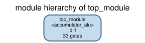
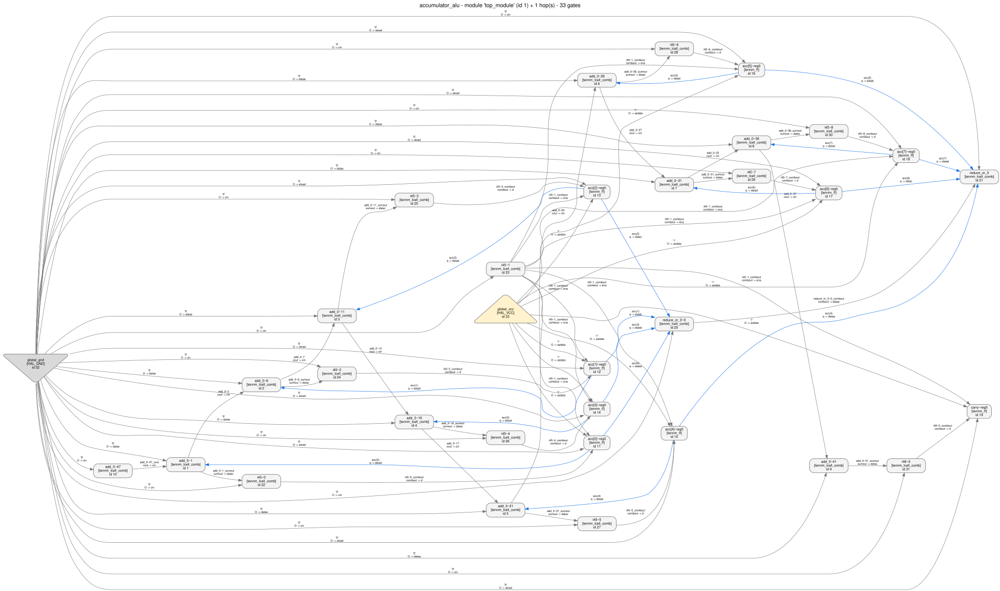
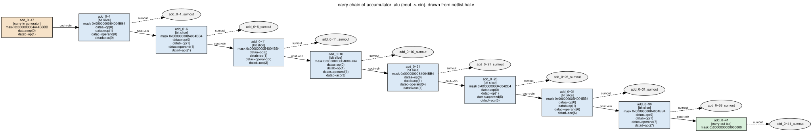
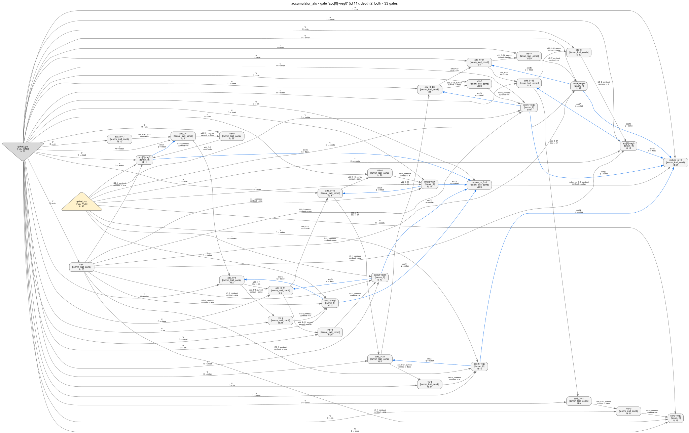
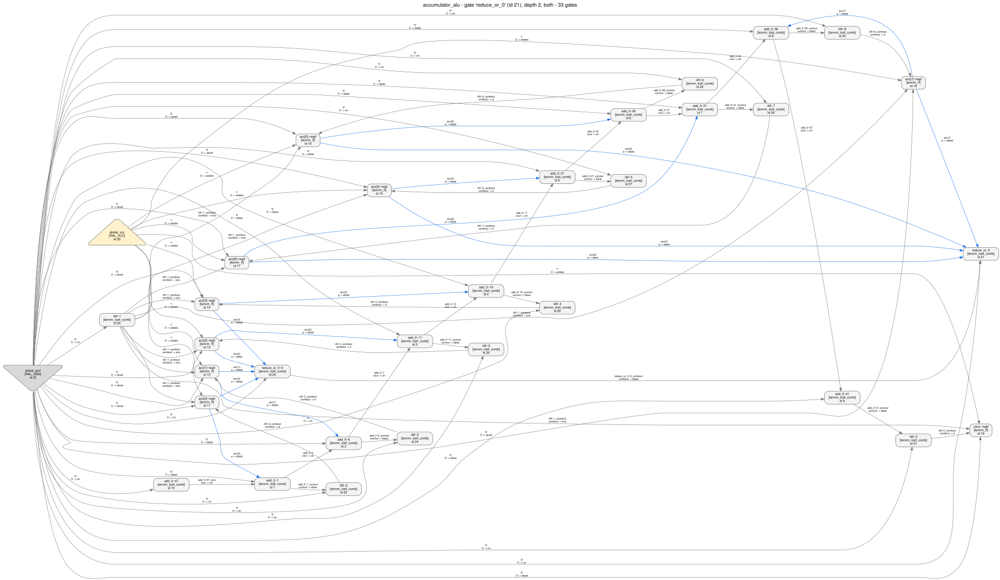

Agilex 3 reverse-engineering walkthrough · 06
An 8-bit accumulator with add, subtract, clear and hold, selected by a 2-bit opcode. We synthesize it with Quartus Prime Pro for a real Agilex 3 part, throw away everything except the exported netlist, and walk back to RTL with HAL. The theme is arithmetic recognition: finding the carry chain, proving a cell really is a full adder, recovering the opcode encoding, and catching the trick that makes one adder do both addition and subtraction.
An engineer who can read Verilog and has never taken a netlist apart. No FPGA architecture knowledge is assumed — the two Agilex cells you need are explained where they first matter.
To follow along you need a built HAL (hal_py on
PYTHONPATH) and Graphviz. You do not need Quartus: the
exported netlist is committed. Two of the steps below —
the coverage check and
the simulation — and the whole of
check.py's first tier run on a plain Python 3
interpreter with nothing installed, so you can start there.
The full specification is in spec.md. In one
table:
op | operation | effect on the clock edge |
|---|---|---|
2'b00 | NOP | acc and carry hold |
2'b01 | ADD | {carry, acc} <= acc + operand |
2'b10 | SUB | {carry, acc} <= acc + ~operand + 1 |
2'b11 | CLR | acc <= 0, carry <= 0 |
Plus a combinational zero output (acc == 0) and an
asynchronous active-low rst_n. Here is
design.v in full — this is the
answer key. Nothing in the analysis below reads it.
module accumulator_alu (
input wire clk,
input wire rst_n, // asynchronous, active low
input wire [1:0] op, // opcode
input wire [7:0] operand, // second ALU operand
output reg [7:0] acc, // the accumulator
output reg carry, // registered carry-out / not-borrow flag
output wire zero // combinational: acc == 0
);
localparam [1:0] OP_NOP = 2'b00;
localparam [1:0] OP_ADD = 2'b01;
localparam [1:0] OP_SUB = 2'b10;
localparam [1:0] OP_CLR = 2'b11;
// There is exactly one adder in this design. Subtraction reuses it as
// acc - operand == acc + ~operand + 1
// so `sub` does double duty: it inverts the operand into the adder and it
// is the carry-in of the very same chain.
wire sub = (op == OP_SUB);
wire [7:0] addend = sub ? ~operand : operand;
wire [8:0] sum = {1'b0, acc} + {1'b0, addend} + {8'b0, sub};
wire do_alu = (op == OP_ADD) || (op == OP_SUB);
wire do_clr = (op == OP_CLR);
always @(posedge clk or negedge rst_n) begin
if (!rst_n) begin
acc <= 8'h00;
carry <= 1'b0;
end else if (do_clr) begin
acc <= 8'h00;
carry <= 1'b0;
end else if (do_alu) begin
acc <= sum[7:0];
carry <= sum[8];
end
// OP_NOP: hold
end
assign zero = ~(|acc);
endmoduleIt is small enough that you can hold the whole netlist in your head — 31 cells — but it contains four things that are genuinely hard to see in a netlist and are worth practising on: a carry chain, a conditional operand inversion, a control-signal decode that has been folded into the LUTs, and a flag reduction tree. Everything else is deliberately stripped away: one clock, no hierarchy, no memory, no I/O primitives.
Device and tool are the same as the hal_agilex fixtures, so the
export lands on primitives the gate library actually models:
| family | Agilex 3 |
|---|---|
| device | A3CW135BM16AE6S, package MBGA896 |
| tool | Quartus Prime Pro Edition 26.1.0 Build 110 03/26/2026 SC |
| stage | post-synthesis snapshot — no fitting, so no placement noise and no I/O buffers |
| gate library | plugins/gate_libraries/definitions/AGILEX_TENNM.hgl |
synth/accumulator_alu.qsf,
in full:
set_global_assignment -name FAMILY "Agilex 3"
set_global_assignment -name DEVICE A3CW135BM16AE6S
set_global_assignment -name TOP_LEVEL_ENTITY accumulator_alu
set_global_assignment -name VERILOG_FILE design.v
set_global_assignment -name PROJECT_OUTPUT_DIRECTORY output_files
set_global_assignment -name ALLOW_SYNCH_CTRL_USAGE OFF# 1. synthesize (about 10 s for this design)
quartus_syn accumulator_alu -c accumulator_alu
# 2. export the post-synthesis Verilog netlist
quartus_eda --simulation --format=verilog --tool=questasim \
--output_directory=simulation accumulator_alu -c accumulator_alu
# -> simulation/accumulator_alu.vo
# 3. rewrite the .vo into something HAL's Verilog front end can read
python tools/hal_agilex import netlist/accumulator_alu.vo -o netlist/netlist.hal.v
synth/run_synth.sh is those three
commands wrapped up; it deletes the Quartus database afterwards, which is why
only the project files and the two netlists are committed here.
HAL's Verilog parser is a structural netlist reader, and the Quartus writer
emits three things it rejects. tools/hal_agilex import handles each
one exactly, or refuses:
tri1 devclrn/devpor/devoe become plain wires with
assign … = 1'b1;.datac(~x) are absorbed into
lut_mask — mask bit j moves to
j ^ (1<<i), which is an exact relabelling. An inversion on
cin, on a flip-flop pin, or on datae/dataf
of an arithmetic cell is refused, because absorbing it would change
the meaning;.combout()) are dropped, and the
assign unknown = 1'bx Quartus declares is dropped only while
nothing reads it.This matters for reading the netlist later. The same adder slice appears as
// netlist/accumulator_alu.vo -- four inverted inputs
.lut_mask (64'h00000000002D2DD2) .dataa(~op[0]) .datab(~op[1]) .datac(~operand[0]) .datad(~acc[0])
// netlist/netlist.hal.v -- inversions absorbed into the mask
.lut_mask (64'h00000000B4004BB4) .dataa( op[0]) .datab( op[1]) .datac( operand[0]) .datad( acc[0])
Both encode the same function (the four inversions permute mask bit
j to j ^ 0b1111 inside each 16-bit half). When a mask
in this guide does not match the one in your editor, check which of the two
files you are looking at.
ALLOW_SYNCH_CTRL_USAGE OFF stops Quartus from putting the CLR
operation into the flip-flop's sclr port. Without it, the design
synthesizes to 9 tennm_ff + 14 tennm_lcell_comb
with all nine flip-flops driving .sclr(\reduce_nor_3~combout ) —
that variant is committed as
netlist/accumulator_alu_sclr_variant.vo
so you can see it. sclr is a real port of the primitive, but it is
outside the configuration tools/hal_agilex has validated, and the
inventory says so rather than quietly modelling it:
$ python tools/hal_agilex inventory netlist/accumulator_alu_sclr_variant.vo
unsupported | Instances of a covered primitive in an unvalidated configuration
| 9 instance(s) use pins or parameters whose behaviour has not been
validated against the vendor export.Two lessons. First, this is what a coverage gap looks like when a tool is honest about it — an explicit "unsupported", not a plausible-looking answer. Second, as a reverse engineer you rarely get to choose your netlist; when a synthesis option pushes logic into a primitive port your tooling has not validated, the correct move is to widen the model, not to assume the port behaves the way its name suggests.
$ HAL_BASE_PATH=/work/build HAL_PY_PATH=/work/build/lib \
PYTHONPATH=/work/build/lib:tools \
python3 examples/agilex3_walkthroughs/06_accumulator_alu/analyze.py
analyze.py is the script that produced
every text file in artifacts/. Its first step loads the netlist
through hal_agilex.hal_adapter, which does two things: it loads
netlist.hal.v against AGILEX_TENNM.hgl, and then it
attaches a Boolean function to every ALM with
Gate.add_boolean_function.
An Agilex ALM has ten input pins and three outputs whose meaning depends on
lut_mask and on whether the cell is in normal or arithmetic
mode. HAL derives a LUT function from an init string only for gate types with at
most six inputs and one function per output, so AGILEX_TENNM.hgl
deliberately carries no lut_config for
tennm_lcell_comb. Without the adapter, every ALM output would be an
empty function and every analysis downstream would see a free variable. With it,
gate.get_boolean_function("sumout") returns the real thing — which is
what makes steps 5 and 7 below possible at all.
== netlist statistics ==
design name : accumulator_alu
gate library : AGILEX_TENNM
gates : 33
nets : 53
modules : 1
gate types:
HAL_GND 1
HAL_VCC 1
tennm_ff 9
tennm_lcell_comb 22
elaboration: 22 lcell(s) given a Boolean function, 9 ff(s) checked, 0 refused
global input nets (12): clk, op(0), op(1), operand(0), operand(1), operand(2), operand(3), operand(4), operand(5), operand(6), operand(7), rst_n
global output nets (10): acc(0), acc(1), acc(2), acc(3), acc(4), acc(5), acc(6), acc(7), carry, zero
[... the per-flip-flop table that follows is quoted in step 2 ...]
Two of those gates are not vendor primitives: HAL_GND and
HAL_VCC are synthesised by the import because HAL's Verilog front
end needs a ground and a power gate type to materialise the 1'b0 /
1'b1 literals the export uses. The names are prefixed exactly so
they cannot be mistaken for Agilex cells. Everywhere below, "31 cells" means the
real ones.

python tools/hal_viz module_tree netlist/netlist.hal.v -g AGILEX_TENNM.hgl -o images/02_module_tree.svg
— the entire "hierarchy". One module. This is the first thing synthesis took
away from you, and no analysis will give it back; the best you can do is
rebuild a hierarchy that explains the netlist.

python tools/hal_viz netlist_graph netlist/netlist.hal.v -g AGILEX_TENNM.hgl --module 1 --pin-labels -o images/01_netlist_graph.svg
— the whole design in one picture. At 31 cells this is still readable; at
3 100 it would not be, which is why every later view is scoped.
| survived synthesis | gone |
|---|---|
Port names and bit widths (op[1:0], operand[7:0], acc[7:0]) — the top-level interface is preserved verbatim in a post-synthesis export. |
All internal signal names. sub, addend, do_alu, do_clr do not exist; the closest survivors are Quartus's own i45~1, i46~0. |
Register identity: acc[3]~reg0 is recognisably the flip-flop for acc[3]. |
Hierarchy, module boundaries, parameter names, the opcode localparam names. |
| Structure: which cells are in arithmetic mode, what the carry chain order is, which nets are shared. | The distinction between "a mux the designer wrote" and "an AND gate the optimiser produced". Boolean logic has been re-encoded into 6-input LUT masks. |
| The exact Boolean function of every cell, once the ALM semantics are attached. | Intent. Nothing in the netlist says 2'b10 is called SUB. |
A caveat you should hold onto: this is a post-synthesis vendor export,
not an obfuscated or bitstream-recovered netlist. Names like acc[3]~reg0
and add_0~6 are a real gift. Everywhere below where a conclusion
leans on a name, the guide says so and also gives the structural argument that
would survive renaming — because that is the argument you will actually need.
$ python tools/hal_agilex --strict inventory netlist/accumulator_alu.vo -o artifacts/inventory.jsonstatus : proven_under_assumptions
title : Every primitive in the export is inside the validated coverage
summary: All 31 instances are tennm_ff or tennm_lcell_comb, each in a
configuration this package models and has validated against the
vendor export.
data : {"histogram": {"tennm_ff": 9, "tennm_lcell_comb": 22}}Why do this first.
Every later claim is conditional on the semantics you assign to the primitives.
If the export contained a tennm_ram_block, a MAC, or an ALM using
shared arithmetic or the fracturable 7-input mode, the Boolean functions HAL
attaches would be missing or wrong, and a beautiful analysis built on top of
them would be beautifully wrong. Running the inventory first turns "I assume the
model fits" into "I checked, and here is the document that says so."
Note what the status is: proven_under_assumptions, not
proven. The undischarged assumption is the coverage list itself —
the semantics in tools/hal_agilex/primitives.py. Those were
validated by simulating an export against the RTL it came from, which is strong
evidence, not a proof.
Nine tennm_ff. analyze.py prints each one's clock,
enable, asynchronous clear and data driver — the tail of
artifacts/01_stats.txt:
sequential gates:
acc[0]~reg0 clk=clk ena=i45~1_combout clrn=rst_n d=i45~0_combout
acc[1]~reg0 clk=clk ena=i45~1_combout clrn=rst_n d=i45~2_combout
acc[2]~reg0 clk=clk ena=i45~1_combout clrn=rst_n d=i45~3_combout
acc[3]~reg0 clk=clk ena=i45~1_combout clrn=rst_n d=i45~4_combout
acc[4]~reg0 clk=clk ena=i45~1_combout clrn=rst_n d=i45~5_combout
acc[5]~reg0 clk=clk ena=i45~1_combout clrn=rst_n d=i45~6_combout
acc[6]~reg0 clk=clk ena=i45~1_combout clrn=rst_n d=i45~7_combout
acc[7]~reg0 clk=clk ena=i45~1_combout clrn=rst_n d=i45~8_combout
carry~reg0 clk=clk ena=i45~1_combout clrn=rst_n d=i46~0_comboutWhat to read off this. Three facts, none of which needs a single signal name to be trustworthy:
clk pins are on the
same net, and that net is a primary input. No clock gating, no divided clock, no
second domain — so no clock-domain-crossing analysis is needed here (on a design
with two clocks, tools/hal_cdc would be the next stop).tennm_ff.clrn is active-low in the modelled
configuration, so that input is an active-low async reset.The nine flip-flops split 8 + 1 by their data cones (step 4 and step 7), and that 8 + 1 shape — a byte plus one bit, sharing enable and reset — is the signature of a datapath register with a flag bit attached.
# graph_algorithm's SCC decomposition, via analyze.py step_graph_algorithm
from hal_plugins import graph_algorithm
graph = graph_algorithm.NetlistGraph.from_netlist(netlist)
components = graph_algorithm.get_connected_components(graph, True) # strong=True== graph_algorithm: strongly connected components ==
17 strongly connected component(s)
components with more than one gate:
size 3: acc[0]~reg0, add_0~1, i45~0
size 3: acc[1]~reg0, add_0~6, i45~2
size 3: acc[2]~reg0, add_0~11, i45~3
size 3: acc[3]~reg0, add_0~16, i45~4
size 3: acc[4]~reg0, add_0~21, i45~5
size 3: acc[5]~reg0, add_0~26, i45~6
size 3: acc[6]~reg0, add_0~31, i45~7
size 3: acc[7]~reg0, add_0~36, i45~8
self-loops (a gate that feeds back to itself through the graph):
acc[0]~reg0
acc[1]~reg0
acc[2]~reg0
acc[3]~reg0
acc[4]~reg0
acc[5]~reg0
acc[6]~reg0
acc[7]~reg0Why SCCs are the right first structural question. A circuit's feedback structure is the one thing that cannot be optimised away: if a register's output can reach its own input, the design has state that accumulates; if it cannot, the register is a pipeline stage and its value is a pure function of the inputs some fixed number of cycles ago.
Here every acc[i] flip-flop is on a cycle back to itself through
the arithmetic cells. That immediately rules out "8-bit input pipeline register"
and "output holding register", and it is what makes the word
accumulator the right hypothesis before you have looked at a single
LUT mask. The carry flip-flop, notably, is not on such a cycle — it is
written from the datapath but never read back into it, which is exactly how a
status flag behaves.
On an Altera ALM, arithmetic is not built out of generic gates: it uses the
dedicated cout → cin connection between adjacent
cells. That connection is a distinct pin pair, so the chain is trivially
recoverable — walk every net that leaves a cout and arrives at a
cin:
def carry_chain(netlist):
succ, pred = {}, {}
for gate in netlist.get_gates():
out = gate.get_fan_out_net("cout")
if out is None:
continue
for endpoint in out.get_destinations():
if endpoint.get_pin().get_name() == "cin":
succ[gate.get_id()] = endpoint.get_gate()
pred[endpoint.get_gate().get_id()] = gate
# a chain is a maximal path: start at a cell with no predecessor
...== carry chains (cout -> cin) ==
1 chain(s) found
chain 0: 10 cell(s)
[ 0] add_0~47 lut_mask=0x000000004444BBBB sumout=no cout=yes
inputs: dataa=op(0) datab=op(1) datac=0 datad=0 datae=0 dataf=0
cout = (cin | ((! dataa) & datab))
[ 1] add_0~1 lut_mask=0x00000000B4004BB4 sumout=yes cout=yes
inputs: dataa=op(0) datab=op(1) datac=operand(0) datad=acc(0) datae=0 dataf=0
sumout = ((((! dataa) & datab) & ((cin | ((datac & datad) | ((! datac) & (! datad)))) & ((! cin) | ((datac | datad) & ((! datac) | (! datad)))))) | ((dataa | (! datab)) & ((cin & ((datac & datad) | ((! datac) & (! datad)))) | ((! cin) & ((datac | datad) & ((! datac) | (! datad)))))))
cout = ((cin & datad) | ((cin | datad) & ((datac & (dataa | (! datab))) | ((! datac) & ((! dataa) & datab)))))
[ 2] add_0~6 lut_mask=0x00000000B4004BB4 sumout=yes cout=yes
inputs: dataa=op(0) datab=op(1) datac=operand(1) datad=acc(1) datae=0 dataf=0
[... sumout and cout are the same two expressions as [ 1] ...]
[... cells [ 3] through [ 7] repeat that block on operand(2)/acc(2)
up to operand(6)/acc(6) ...]
[ 8] add_0~36 lut_mask=0x00000000B4004BB4 sumout=yes cout=yes
inputs: dataa=op(0) datab=op(1) datac=operand(7) datad=acc(7) datae=0 dataf=0
[... sumout and cout are the same two expressions as [ 1] ...]
[ 9] add_0~41 lut_mask=0x0000000000000000 sumout=yes cout=no
inputs: dataa=0 datab=0 datac=0 datad=0 datae=0 dataf=0
sumout = cin
analyze.py (step_chain_diagram) using
hal_viz.dot, rendered with Graphviz — see
images/03_carry_chain.dot.
hal_viz netlist_graph --gate … --depth N? That draws a
neighbourhood, and a ten-cell chain needs depth 9 from the head — by
which point the picture has swallowed the whole design again. When the
structure you want is a path rather than a ball, drawing it yourself from
the same DOT emitter is three dozen lines and produces a far better figure.
What the shape tells you. One chain, ten cells, and the
middle eight are identical — same lut_mask, same pin
pattern, differing only in which operand and acc bit
they take. Eight identical arithmetic slices in a chain is an 8-bit adder, and
the bit order is the chain order: the cell fed by operand[0] is bit
0. That is the single most valuable structural fact in the whole netlist,
and it took one graph walk.
The two cells that are not identical are the interesting ones. The
last one, add_0~41, has lut_mask = 0 and drives only
sumout: with a zero mask the propagate term is constantly 0, so
sumout = 0 XOR cin = cin. It is a pure tap that lifts the carry out
of bit 7 into ordinary logic — i.e. it is bit 8 of the sum. The first one is the
subject of step 6.
"Eight identical arithmetic cells" is a structural argument. It is strong, but it is still pattern matching. The Boolean functions the adapter attached let you turn it into arithmetic:
sumout = gate.get_boolean_function("sumout")
cout = gate.get_boolean_function("cout")
for vector in range(1 << len(variables)):
... sumout.evaluate(assignment), cout.evaluate(assignment)== is a slice really a full adder? ==
Enumerating the Boolean functions HAL attached to one arithmetic
cell, over all assignments of its driven inputs.
cell : add_0~1
lut_mask : 0x00000000B4004BB4
inputs : dataa=op(0) datab=op(1) datac=operand(0) datad=acc(0)
free variables: cin, dataa, datab, datac, datad
cin dataa datab datac datad | sumout cout
--------------------------------------------------------------------------------------------------
0 0 0 0 0 | 0 0
1 0 0 0 0 | 1 0
0 1 0 0 0 | 0 0
1 1 0 0 0 | 1 0
0 0 1 0 0 | 1 0
1 0 1 0 0 | 0 1
0 1 1 0 0 | 0 0
1 1 1 0 0 | 1 0
[... the 16 rows with datac=1,datad=0 and with datac=0,datad=1 elided ...]
0 0 0 1 1 | 0 1
1 0 0 1 1 | 1 1
0 1 0 1 1 | 0 1
1 1 0 1 1 | 1 1
0 0 1 1 1 | 1 0
1 0 1 1 1 | 0 1
0 1 1 1 1 | 0 1
1 1 1 1 1 | 1 1
Check against a full adder over the three non-opcode inputs, for each
fixed opcode. A full adder satisfies sum = x^y^cin and
cout = majority(x, y, cin).How to read a slice truth table. Fix the two opcode inputs
and look at the remaining three (operand[0], acc[0],
cin). For each fixed opcode the slice must satisfy
sumout = x ^ y ^ cin and cout = majority(x, y, cin),
where x and y are the operand and accumulator bits —
possibly with one of them inverted. If it does, the cell is a full adder, full
stop; there is no pattern matching left in that claim.
What you find is that the identity holds for every opcode, but with
operand[0] inverted when op = 2'b10 and
straight otherwise. The conditional inversion is inside the slice's own LUT
mask: the ALM had four spare inputs, so the synthesizer folded the operand mux
into the adder instead of building a separate row of XOR gates. That is a
completely normal thing for an FPGA synthesizer to do, and it is why the
next step matters.
Look again at position 0 of the chain in artifacts/02_carry_chain.txt:
its sumout goes nowhere, its cin is tied to ground, and
its only output is cout. Quartus even prints the equation next to
the instance in the .vo:
tennm_lcell_comb #(.lut_mask (64'h000000002222DDDD)) \add_0~47 (
// \add_0~47_cout = ( (!op[1]) | (op[0]) ) & !VCC | !( (!op[1]) | (op[0]) ) & ( (!op[0] & op[1]) )
.dataa(~op[0]), .datab(~op[1]), .cin(gnd), .cout(\add_0~47_cout ), ... );
An arithmetic ALM splits its 64-bit mask into a propagate half
p (bits 0–15) and a generate half g (bits
16–31), and computes
sumout = p ^ cin, cout = (p & cin) | (!p & g).
Here p = op[0] | !op[1] and g = !op[0] & op[1] —
note that g is exactly !p. With cin tied
to ground the carry equation collapses:
cout = (p & 0) | (!p & g) = !p & g = g
carry-in of the adder = (!op[0]) & op[1] = (op == 2'b10)This is the whole subtract trick, and it is one cell.
Two's complement says a - b == a + ~b + 1. The ~b half
was folded into the eight slices (step 5); the + 1 half is
this cell, injecting a 1 into the bottom of the carry chain. A cell that
drives cout and nothing else, sitting at the head of a chain with
cin tied low, is a carry-in generator — and its Boolean function is
the condition under which the adder becomes a subtractor.
Generalise the heuristic, because you will need it again: a chain
head whose sumout is unread is a carry-in; a chain tail whose
lut_mask is 0 is a carry-out tap. Both are one cell of
"free" arithmetic that carries a large amount of intent.
And note the corollary for the sign convention: because SUB is computed as
acc + ~operand + 1, the resulting bit 8 is not a
borrow — it is not-borrow. carry = 1 after a SUB means
acc >= operand. Reading that backwards is one of the classic ways
to get an ALU recovery subtly wrong; the simulation in step 12 is how you catch
it.
Two questions remain: what drives the shared enable, and what drives the nine
data inputs. analyze.py walks back one level from each flip-flop pin
and prints the Boolean function of the driving cell.
Those functions are printed in the driving cell's own pin names. The equations
Quartus left in the .vo name the nets, and the two line up:
\i45~1_combout = (op[1]) | (op[0]),
\i45~0_combout = (\add_0~1_sumout & ( (!op[0]) | (!op[1]))) and
\i46~0_combout = (\add_0~41_sumout & ( (!op[0]) | (!op[1]))) — so
dataa and datab below are the two opcode bits, and
datac is that bit's sumout off the carry chain.
== control cone of the register file ==
For every flip-flop: the Boolean function of its enable and of its
data input, expressed in terms of the nets that drive them.
flip-flop acc[0]~reg0
ena : i45~1_combout <- i45~1.combout
= (dataa | datab)
d : i45~0_combout <- i45~0.combout
= (datac & ((! dataa) | (! datab)))
flip-flop acc[1]~reg0
ena : i45~1_combout <- i45~1.combout
= (dataa | datab)
d : i45~2_combout <- i45~2.combout
= (datac & ((! dataa) | (! datab)))
[... acc[2] through acc[7] repeat verbatim; their d nets are
i45~3_combout through i45~8_combout ...]
flip-flop carry~reg0
ena : i45~1_combout <- i45~1.combout
= (dataa | datab)
d : i46~0_combout <- i46~0.combout
= (datac & ((! dataa) | (! datab)))
distinct enable functions: 1
(dataa | datab) <- 9 flip-flop(s)
python tools/hal_viz netlist_graph netlist/netlist.hal.v -g AGILEX_TENNM.hgl --gate 'acc[0]~reg0' --depth 2 --show-boundary --pin-labels -o images/04_acc0_cone.svg
— the two-hop neighbourhood of one accumulator bit. Every other
acc bit looks exactly like this.
Three cells decide everything.
op[0] | op[1] — high for three opcodes, low for exactly one.
A register that does not update for exactly one opcode value is a hold /
NOP encoding, and you have just recovered which value it is.<sum bit> & ((!op[0]) | (!op[1])) —
the sum, forced to zero for exactly one opcode value. A datapath ANDed with
a condition that is false for one opcode is a synchronous clear, and
you have recovered that encoding too.Three one-hot-ish conditions over a 2-bit space, and by elimination the fourth opcode is "add without inverting". The whole encoding falls out:
op | enableop[0]|op[1] | keep!op[0]|!op[1] | carry-in!op[0]&op[1] | therefore |
|---|---|---|---|---|
00 | 0 | 1 | 0 | register does not update → hold |
01 | 1 | 1 | 0 | writes the sum, carry-in 0 → add |
10 | 1 | 1 | 1 | writes the sum, operand inverted, carry-in 1 → subtract |
11 | 1 | 0 | 0 | writes zero → clear |
What this step depends on. Only that the input port is called
op — and not even that, really: had it been called i7
you would still find "two primary-input bits that between them drive the enable,
the data gating and the chain carry-in, and nothing else". That is the
definition of an opcode. The naming of the four operations is the part
you have to supply as a human.
Two cells are left over. They are not in the carry chain and they do not feed any flip-flop:
// from netlist/accumulator_alu.vo, with \acc[i]~reg0_q shortened to acc[i]
\reduce_or_0~0_combout = (!acc[0] & (!acc[1] & (!acc[2] & !acc[3])))
\reduce_or_0~combout = ( \reduce_or_0~0_combout & ( (!acc[4] & (!acc[5] & (!acc[6] & !acc[7]))) ) )
// and the only thing that reads it:
assign zero = \reduce_or_0~combout ;
python tools/hal_viz netlist_graph netlist/netlist.hal.v -g AGILEX_TENNM.hgl --gate 'reduce_or_0' --depth 2 --show-boundary --pin-labels -o images/05_zero_cone.svg
— a two-level reduction over the eight register outputs, ending at a primary
output. Nets that leave the two-hop scope are drawn as dashed stubs
(--show-boundary), so a truncated view never looks complete.
Reduction trees are worth recognising on sight. A cone whose
inputs are all the bits of a register you have already identified, whose
depth is ceil(log_k(width)) for the LUT arity k, and
whose output goes straight to a port, is a flag. Which flag depends on the
function: an AND of all bits is "all ones", an OR is "any", a NOR — this one —
is zero.
Two structural details worth noting. First, the reduction is over the
register outputs, not over the adder's sumout nets, so the
flag reflects the accumulator as it is now, not the result being computed —
i.e. it is one cycle "behind" the ALU. Second, the split is 4 + 4 rather than
6 + 2: the second cell spends one of its inputs on the first cell's result and
takes four accumulator bits, using five of the six it has. That is the ALM's
arity showing through, not a design decision, and it is a good reminder that
tree shape in a netlist is a property of the cell library, while tree
function is a property of the design.
# dataflow_analysis (DANA), via analyze.py step_dataflow
from hal_plugins import dataflow
configuration = dataflow.Configuration(netlist).with_flip_flops()
result = dataflow.analyze(configuration)== dataflow_analysis (DANA): recovered register groups ==
1 group(s)
group 0 ( 9 ff): acc[0]~reg0, acc[1]~reg0, acc[2]~reg0, acc[3]~reg0, acc[4]~reg0, acc[5]~reg0, acc[6]~reg0, acc[7]~reg0, carry~reg0
No figure for this step, and that is the honest rendering of the result.
hal_viz dataflow can also draw DANA's register graph as an SVG, but
this run read the result straight from the plugin in analyze.py,
and with a single group there is nothing for a picture to show that the two
lines above do not already say — one group, nine flip-flops, listed in full.
The textual result is the finding here, so it stands in for the figure.
Reasoning. DANA
(plugins/dataflow_analysis) groups flip-flops that plausibly belong
to the same word-level register, from their control signals and the shape of the
data flow around them. On a large unknown netlist that is how you find "there is
a 32-bit register here and an 8-bit one there" before you understand anything
else. Here it returns one group of nine: all eight
acc bits plus carry.
What that does and does not establish. It restates, from the
plugin's own criteria, the reading of step 2 — nine flip-flops on one clock, one
enable and one clear, with no control signal that tells any of them apart. That
is the whole of what DANA had to work with here, and it is why it cannot
subdivide the group. It does not establish that the design has a 9-bit
datapath register. The original has an 8-bit accumulator and a 1-bit flag, and
the seam between them shows up elsewhere: in step 3, where the eight
acc bits sit on feedback cycles and carry~reg0 does
not, and in step 8, where the zero reduction reads eight bits rather than nine.
Nor does DANA give the bit order inside the group — that came from the carry
chain in step 4.
So take the grouping for what it is: a heuristic, correct about shared control, and a good first cut on a design you know nothing about. On a netlist with two registers under different enables it would have split them for you and saved real work; on this one it hands you a nine-bit blob that a human still has to refine into 8 + 1.
configuration = module_identification.Configuration(netlist)
configuration = configuration.with_known_registers(dana_groups)
result = module_identification.execute(configuration)== module_identification ==
known registers handed to the plugin: 1
module_identification.execute returned None
(the plugin logged the reason; this is NOT evidence that the
netlist contains no arithmetic)Reasoning.
module_identification is the word-level end of HAL's analysis stack:
given registers to start from, it enumerates candidate operations over their
input cones — adder, subtractor, comparator, counter — and then tries to
verify each candidate as an SMT equivalence against the gate-level cone.
A verified candidate is a proof about that cone, which is the same kind of
statement the by-hand argument in steps 4–6 arrives at.
What happened here: nothing. Handed the one nine-flip-flop
group DANA produced, module_identification.execute returned
None — not an empty candidate set, not a wrong answer, no result
object at all, so the candidate listing analyze.py is ready to print
never ran. The plugin logged its reason to the HAL log; analyze.py
records the return value and not that log, which is why the artifact says only
that it returned None and then refuses to interpret it. That is
genuinely everything this run knows about the failure.
What a null result is evidence of. Only that the plugin
produced nothing on this input. It is not evidence that the netlist contains no
arithmetic: step 5 proves a slice is a full adder from the cell's own Boolean
function, and step 12 exercises the whole adder. Note that this is a
weaker outcome than the recognizer's miss in step 11 — that one at
least reported unknown and named the cell it choked on, whereas a
bare None gives you no handle. Which is the practical argument for
the tools/hal_findings vocabulary: a status and a reason cost the
tool one line and are the difference between a miss you can act on and a miss
you can only shrug at. The next moves, cheapest first: re-run with the HAL log
visible to see where it stopped; hand it the eight acc flip-flops
without carry, since the group it was given mixes a datapath word
with a flag bit; and failing that, do what this guide did anyway — read the
cells.
hal_agilex recognize: an honest miss
This fork ships a second, Agilex-specific arithmetic recognizer that works on
the .vo directly and needs no HAL build. On the
agilex3_counter_adder fixture it recognises the chain and then
proves the adder correct over all 65 536 operand pairs. On this netlist:
$ python tools/hal_agilex recognize netlist/accumulator_alu.vo -o artifacts/recognize.json
unknown | No carry-chain adder recognized
| 1 carry chain(s) were followed and none matched the ripple-carry
adder pattern; this says nothing about what the design computes.
data : {"rejected": ["cell add_0~47 is not an arithmetic slice"]}
There is an 8-bit ripple-carry adder in this netlist — we proved a slice
is a full adder in step 5 and we will confirm the whole thing by simulation in
step 12. recognize missed it because its chain walk expects every
cell in the chain to be a bit slice, and the head of this chain is a carry-in
generator (step 6) whose sumout is unconnected. The counter fixture
it was written against has cin tied to ground with no generator
cell, so the case never came up.
How a human works around this. Notice first what the tool
did not do: it did not report an adder with the wrong width, and it did
not silently return nothing. It reported unknown, named the cell it
choked on (add_0~47), and said in its own summary that this "says
nothing about what the design computes". That is the difference between a tool
you can build on and one you cannot — a recognizer that had guessed
"9-bit adder" here would have poisoned everything downstream.
The workaround is the walk in steps 4–6: strip the non-slice cells off the
ends of the chain, re-ask the question about the eight cells in the middle, and
then handle the two end cells as what they are — a carry-in condition and a
carry-out tap. That is three lines of the chain walk in
analyze.py, and it is the fix the recognizer itself needs
(recognize.classify_arithmetic_cell plus the chain walk are the
pieces to change).
The general lesson. Pattern-matching recognizers are tuned on the examples their author had. When one says "no match", the correct reading is "my pattern did not fit", never "the structure is absent". Treat a miss as a pointer to where your netlist differs from the tool's assumptions — here it named that cell for you — and go look at that cell by hand.
Everything so far is structural. The cheapest way to check a structural story is
to run the netlist: hal_agilex's reference simulator drives
the .vo with the modelled ALM semantics, so you can black-box a
circuit you only have as gates.
== opcode sweep, by simulating the exported netlist ==
The reference simulator in tools/hal_agilex drives the .vo with the
modelled ALM semantics. For each opcode we load a known accumulator
value, then apply one clock edge with a known operand.
op | acc before | operand | acc after | carry after | zero after
---+------------+---------+-----------+-------------+-----------
0 | 0x05 | 0x03 | 0x05 | 0 | 0
0 | 0x80 | 0x80 | 0x80 | 0 | 0
0 | 0x03 | 0x05 | 0x03 | 0 | 0
0 | 0xFF | 0x01 | 0xFF | 0 | 0
---+------------+---------+-----------+-------------+-----------
1 | 0x05 | 0x03 | 0x08 | 0 | 0
1 | 0x80 | 0x80 | 0x00 | 1 | 1
1 | 0x03 | 0x05 | 0x08 | 0 | 0
1 | 0xFF | 0x01 | 0x00 | 1 | 1
---+------------+---------+-----------+-------------+-----------
2 | 0x05 | 0x03 | 0x02 | 1 | 0
2 | 0x80 | 0x80 | 0x00 | 1 | 1
2 | 0x03 | 0x05 | 0xFE | 0 | 0
2 | 0xFF | 0x01 | 0xFE | 1 | 0
---+------------+---------+-----------+-------------+-----------
3 | 0x05 | 0x03 | 0x00 | 0 | 1
3 | 0x80 | 0x80 | 0x00 | 0 | 1
3 | 0x03 | 0x05 | 0x00 | 0 | 1
3 | 0xFF | 0x01 | 0x00 | 0 | 1
---+------------+---------+-----------+-------------+-----------
Hypotheses, checked over a sampled lattice of (acc, operand) pairs
(accumulator in strides of 7, operand in strides of 5: 37 x 52 = 1924
pairs per opcode). This is a sample, not an exhaustive proof; the
exhaustive-per-opcode claim in the guide is the 200-cycle reference
comparison in artifacts/behavior_recovered.json.
op = 0 consistent with: hold
op = 1 consistent with: add
op = 2 consistent with: sub
op = 3 consistent with: clearWhy this comes last, not first. Simulation tells you
what, never why. Had you started here you would have learned
that op = 2'b10 subtracts, and nothing about the single carry-in
cell that makes it possible — so you would not know which cells to modify to
change the behaviour, and you would not be able to tell an 8-bit adder from a
lookup table that happens to agree on the vectors you tried.
Used at the end, it is exactly the right instrument: each row here
falsifies a hypothesis the structure suggested. Note the two rows that matter
most: op=2 with acc=0x05, operand=0x03 gives
0x02 with carry = 1, and with
acc=0x03, operand=0x05 gives 0xFE with
carry = 0. Carry high on the larger-minus-smaller case confirms the
not-borrow polarity we predicted in step 6 — that is the check that would have
caught a sign-convention mistake.
recovered.v holds two modules. The first
is a literal transcription of the netlist — every line corresponds to a cell,
including the shapes no human would write:
// recovered_literal (abridged; see recovered.v for the full commentary)
wire sub = (~op[0]) & op[1]; // add_0~47.cout
wire [7:0] b = operand ^ {8{sub}}; // folded into the eight slices
wire [8:0] sum = {1'b0, acc_r} + {1'b0, b} + {8'b0, sub};
wire enable = op[0] | op[1]; // i45~1 -> every ena pin
wire keep = (~op[0]) | (~op[1]); // i45~0, i45~2..8, i46~0 -> every d pin
always @(posedge clk or negedge rst_n) begin
if (!rst_n) begin acc_r <= 8'h00; carry_r <= 1'b0; end
else if (enable) begin
acc_r <= sum[7:0] & {8{keep}};
carry_r <= sum[8] & keep;
end
end
assign zero = ~(|acc_r); // reduce_or_0~0 + reduce_or_0
The second is the same behaviour written the way a person would, once the
opcode table from step 7 is in hand — recovered_clean. That is the
actual claim about the original design.
recovered_reference.py is
recovered_clean as an executable model.
hal_agilex behavior simulates the exported netlist against
it:
$ python tools/hal_agilex behavior netlist/accumulator_alu.vo \
--reference recovered_reference.py -o artifacts/behavior_recovered.json
proven_bounded | The exported netlist matches the reference model for 200 cycles
| 200 pseudo-random cycles, including asynchronous clears, agree
with the reference model. Nothing is claimed beyond that bound.
bounds | {"cycle_bound": 200, "unbounded": false}
proven_bounded, not proven. Two hundred pseudo-random
cycles with two asynchronous clears is strong evidence and would have caught a
wrong opcode encoding, a wrong flag polarity or a missing carry-in instantly.
It is not a proof of equivalence: a difference that needs a specific
201-cycle sequence to appear would survive it. For a design this size the honest
next step is bounded model checking or exhaustive per-opcode enumeration, not a
louder adjective.
| aspect | outcome | notes |
|---|---|---|
| Port list, widths, directions | exact | Preserved verbatim by a post-synthesis export. In a bitstream-derived netlist you would not get this. |
| Opcode encoding (all four values) | exact | Recovered structurally in step 7 and confirmed by simulation in step 12. |
| Adder width and bit order | exact | Carry-chain order gives the bit order directly. |
| Sub-as-add-of-complement, incl. carry-in | exact | One cell (add_0~47) plus the conditional inversion folded into the slices. |
| Carry flag polarity (not-borrow) | exact | Predicted from structure, confirmed by the op=2 rows of the sweep. |
| Asynchronous, active-low reset | exact | From the clrn pin semantics of the modelled tennm_ff. |
| Zero flag | exact | Including the fact that it reads the register, not the sum. |
| Internal signal names | lost | sub, addend, do_alu, do_clr are gone; recovered.v invents sub, enable, keep. Two of those happen to be near-misses of the originals — that is luck, not recovery. |
| Operation names | lost | The netlist proves 2'b10 subtracts; nothing in it says the designer called it OP_SUB. |
| Hierarchy | lost / not applicable | The original was flat too, so nothing was destroyed here. On a hierarchical design this is where most of the loss lives. |
| The form of the RTL | lost | The original wrote CLR as a branch of an if/case; the netlist implements it as an AND on the data path (because of ALLOW_SYNCH_CTRL_USAGE OFF) and recovered_literal faithfully reproduces the AND. Behaviourally identical, structurally a different program. |
The do_alu signal | merged away | The original had a distinct do_alu = (op==ADD)||(op==SUB). Synthesis proved it redundant — enable && keep is the same condition — and never built it. No analysis can recover a signal that was optimised out of existence. |
All of the behaviour, none of the vocabulary.
recovered_clean is behaviourally indistinguishable from
design.v over 200 cycles of random stimulus, and every structural
claim behind it is backed by a named cell in the netlist. What did not come back
is everything that lived only in the source text: the names, the
localparams, the shape of the if chain, and the
intermediate signal the optimiser deleted. That split — behaviour recoverable,
intent inferred, vocabulary gone — is the normal outcome of netlist RE, and
being clear about which side of the line each claim sits on is most of the
skill.
# tier 1 needs nothing but Python 3 and tools/ on sys.path
python3 examples/agilex3_walkthroughs/06_accumulator_alu/check.py
# tier 2 additionally re-derives the chain and the control cone through hal_py
HAL_PY_PATH=<build>/lib python3 .../check.py --require-hal
check.py re-asserts the claims this guide
makes — the primitive histogram, the single ten-cell chain, the shared enable
and clear, the four opcode behaviours, and the 200-cycle agreement with
recovered_reference.py. If a regenerated netlist ever packs
differently, it fails loudly instead of leaving a guide that quietly describes a
netlist that no longer exists.
recognize.classify_arithmetic_cell about carry-in generators and
carry taps, then check it still passes the
agilex3_counter_adder fixture. The chain walk is small and the
fixtures are the tests.sclr.
accumulator_alu_sclr_variant.vo is the netlist that needs it.
Model the pin in hal_agilex/primitives.py, regenerate
AGILEX_TENNM.hgl with library.py, and validate it
the way the existing coverage was validated — by simulating the export
against a reference model. Then re-run this whole walk on that netlist and
see how much easier the clear is to spot when it is a named pin instead of
an AND gate.netlist.hal.v to n0, n1, … and redo the walk. Every
step above except the flip-flop-to-bit mapping should still work; the point
of the exercise is to find out exactly where you were leaning on Quartus's
generosity.
Every analysis in this fork that emits a tools/hal_findings
document can be collected into a static report, worst-status first, with each
badge spelling out what it does and does not claim:
$ python tools/hal_viz report artifacts/inventory.json artifacts/recognize.json \
artifacts/behavior_recovered.json artifacts/inventory_sclr_variant.json \
--title "06_accumulator_alu — what each analysis claimed" \
-o artifacts/findings_report.html
artifacts/findings_report.html
puts the four statuses side by side — proven_under_assumptions
(coverage), unknown (the recognizer miss),
proven_bounded (the 200-cycle equivalence) and
unsupported (the sclr variant) — which is a good habit
to build: the interesting question at the end of an RE session is rarely "what
did I find" but "how strong is each thing I am about to write down".
hal_viz report needs no HAL build; it reads JSON.
| tool | what it did here |
|---|---|
tools/hal_agilex | primitive coverage, the .vo → .hal.v rewrite, ALM semantics for HAL, the reference simulator, the arithmetic recognizer |
tools/hal_viz | every diagram on this page (netlist_graph, module_tree, dataflow) |
plugins/graph_algorithm | the SCC decomposition in step 3 |
plugins/dataflow_analysis | register grouping in step 9 |
plugins/module_identification | asked for word-level operation recovery in step 10 — it returned no result |
tools/hal_findings | the schema every status quoted above comes from — proven, proven_bounded, proven_under_assumptions, heuristic, unknown, unsupported each mean something specific |
Netlist: Quartus Prime Pro 26.1.0 Build 110, Agilex 3 A3CW135BM16AE6S,
post-synthesis export. Analyses run against a HAL build with the
AGILEX_TENNM gate library. Every image on this page was generated
from netlist/netlist.hal.v by tools/hal_viz; every
quoted output is a file under artifacts/.